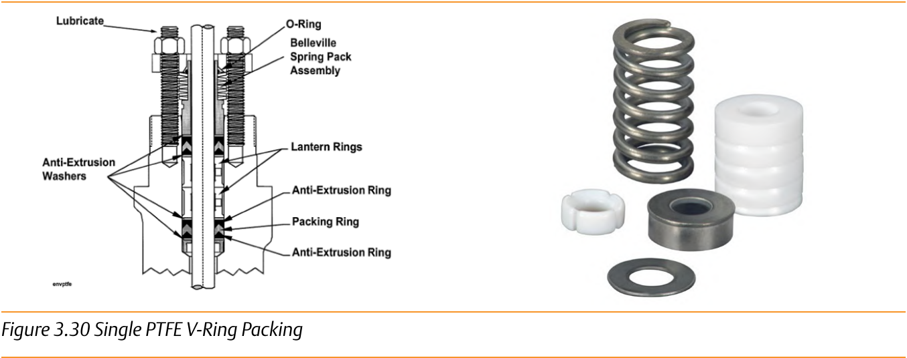
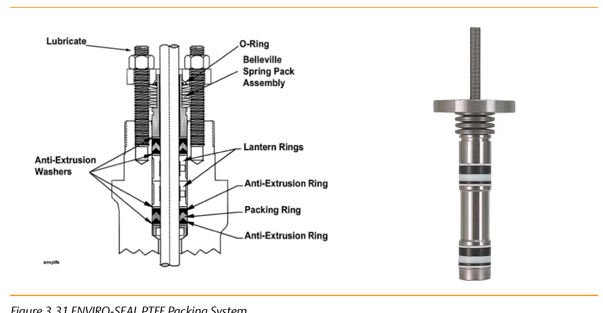

Single PTFE V-Ring vs. ENVIRO-SEAL PTFE
Single PTFE V-Ring

Coil spring; ≤300 psi (20.7 bar) / -18 to 93°C (200°F); sliding-stem only; lowest friction of any system in this module; does not meet the low-emission criteria for rotary valves.
ENVIRO-SEAL PTFE

Live-load spring pack; up to 750 psi (51.7 bar) / 232°C (450°F); sliding-stem and rotary; also specified for non-environmental high-temperature/pressure service for its longer service life.
After Control Valve Handbook, 6th ed., Figs. 3.30 & 3.31 — used directly. Component Index: cvh-cmp-single-ptfe-vring-packing, cvh-cmp-enviroseal-ptfe-packing-system.